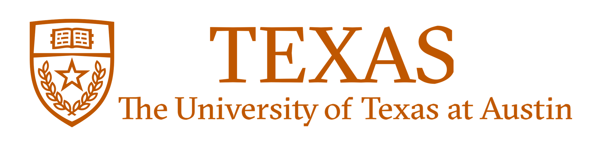

Lin Guan
Ph.D. Student, Arizona State University
About
I'm a 3rd-year Ph.D. student in Computer Science at Arizona State University. I work at Yochan Lab (AI Lab), supervised by Dr. Subbarao Kambhampati. My research interests are Multi-Modal Human-Agent Interaction, Human-in-the-Loop Reinforcement Learning. Specifically, I am working on multi-modal human-agent interaction (e.g. evaluative feedback + explanations, or knowledge-based/concept-based advice) and human advice interpretation (from a neuro-symbolic perspective) under the context of data-efficient human-in-the-loop reinforcement learning and value alignment (i.e. reward learning).
Affiliations
 |
 |
 |
|---|---|---|
|
TikTok |
Arizona State University |
The University of Texas at Austin |
News
- [2021.10]: 1 paper accepted to NeurIPS 2021 as a Spotlight presentation (3%).
- [2021.10]: 1 paper accepted to AAAI 2022 Blue Sky Track.
- [2021.06]: 1 paper accepted to IROS 2021.
- [2021.05]: Machine learning software engineer intern at TikTok and worked on AutoML.
- [2020.12]: Participated in the Deep Reinforcement Learning workshop at NeurIPS 2020.
- [2020.07]: Participated in the Human-in-the-Loop Learning workshop at ICML 2020.
- [2019.12]: 1 paper accepted to AAAI 2020.
- [2019.04]: 1 paper accepted to IJCAI 2019.
Publications
Symbols as a Lingua Franca for Bridging Human-AI Chasm for Explainable and Advisable AI Systems Subbarao Kambhampati, Sarath Sreedharan, Mudit Verma, Yantian Zha, Lin Guan AAAI 2022, Blue Sky Track [Paper]
Contrastively Learning Visual Attention as Affordance Cues from Demonstrations for Robotic Grasping Yantian Zha, Siddhant Bhambri, Lin Guan IROS 2021 [Paper]
Leveraging Human Guidance for Deep Reinforcement Learning Tasks Ruohan Zhang, Faraz Torabi, Lin Guan, Dana H. Ballard, Peter Stone IJCAI 2019, Survey Track [Paper]
Atari-HEAD: Atari Human Eye-Tracking and Demonstration Dataset Ruohan Zhang, Calen Walshe, Zhuode Liu, Lin Guan, Karl S. Muller, Jake A. Whritner, Luxin Zhang, Mary M Hayhoe, Dana H Ballard AAAI 2020 [Paper]
Enhanced Exploration in Neural Feature Selection for Deep Click-Through Rate Prediction Models via Ensemble of Gating Layers Lin Guan, Xia Xiao, Ming Chen, Youlong Cheng Submitted to AAAI 2022
Learning from Ambiguous Demonstrations with Self-Explanation Guided Reinforcement Learning Yantian Zha*, Lin Guan*(equal contribution), Subbarao Kambhampati Submitted to ICRA 2022
Service
- [2021] Served as Program Committee for AAAI 2022 and ICRA 2022.
- [2020] Served as Program Committee for AAAI 2021.
Awards
- [2020] Graduate College Travel Award, Arizona State University.
- [2019] CIDSE Doctoral Fellowship, Arizona State University.
- [2019] Graduating with Highest Honors (Top 4%), The University of Texas at Austin.
- [2018] 2018 Honors Day, College Scholar (Top 20%), The University of Texas at Austin.
- [2018] 2018 University Honor (GPA Based Honors), The University of Texas at Austin.
- [2018] Chevron Scholarship, The University of Texas at Austin.
- [2017] 2017 University Honor (GPA Based Honors), The University of Texas at Austin.